使用說明
不需要懂 HTML，跟著這份說明，就能做出符合無障礙規範的公告、活動或招生內容，再貼到網站後台。
這個工具能做什麼
網站後台的文章編輯器（CKEditor）可以貼上 HTML 原始碼。這個工具幫你把內容排好，並自動檢查是否符合 WCAG 2.1 無障礙規範，最後產生可以直接貼上的原始碼。
- 用點選、填欄位的方式，編排標題、段落、表格、按鈕、檔案下載等內容。
- 每個區塊都會即時顯示是否合規，紅燈就是一定要修正的地方。
- 可以從 67 套現成範本開始，也可以把 Word 文件直接匯入。
注意：工具不會自動儲存
關閉或重新整理網頁，畫布上的內容就會消失。做到一半要離開，請先按右上角「存草稿」把檔案存到電腦，詳見存草稿與我的範本。
提醒：內容不會上傳
所有處理都在你的瀏覽器裡完成，輸入的文字和 Word 檔都不會傳到任何伺服器。
五個步驟快速上手
- 挑一套範本：按左側「瀏覽範本庫」，找到接近的版型，按「加到版面」。
- 改成你的內容：點中間畫布上的區塊，在右側「屬性」分頁修改文字。
- 填入圖片與檔案網址：先把圖片、檔案上傳到網站後台的媒體庫，再把網址貼回工具；圖片記得寫替代文字。
- 把紅燈修完：到右側「檢測」分頁照著提示修正，直到顯示「符合 WCAG 2.1 AA」。
- 產生原始碼貼到後台：按右上角「產生原始碼」→「複製原始碼」，到後台編輯器切換成「原始碼」檢視貼上，再儲存。
認識畫面
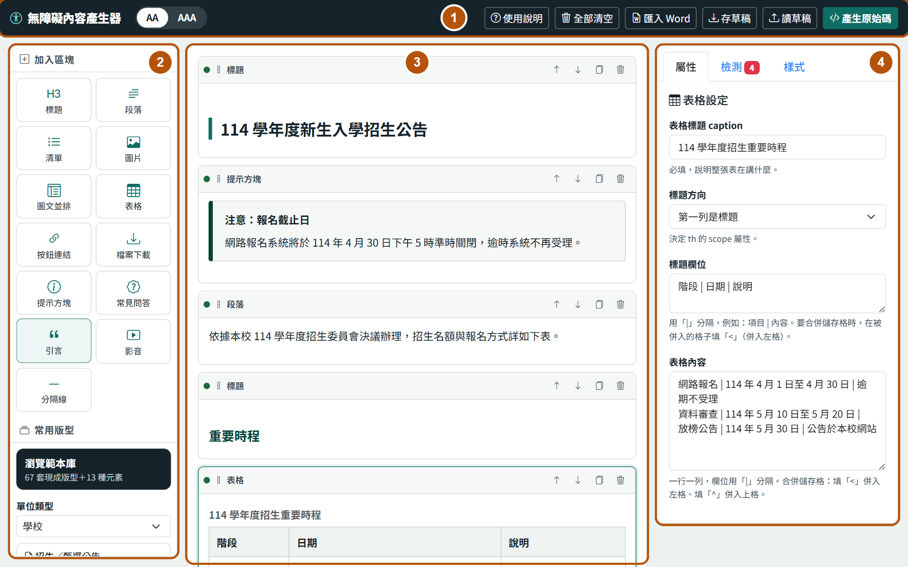
- 上方工具列：AA／AAA 檢測等級切換，以及使用說明、全部清空、匯入 Word、存草稿、讀草稿、產生原始碼。
- 左側面板：「加入區塊」一次加入一個區塊；「常用版型」有「瀏覽範本庫」按鈕與常用版型清單。
- 中間畫布：即時預覽編排結果，每個區塊左上角有檢測燈號。
- 右側面板：「屬性」修改選取的區塊、「檢測」列出要修正的問題、「樣式」調整標題層級與主題色。
放入內容
剛打開工具時，畫布中間會顯示起始說明。可以直接按「從版型開始」「匯入 Word 文件」「加入單一區塊」，或按「載入範例看看效果」先試試看。
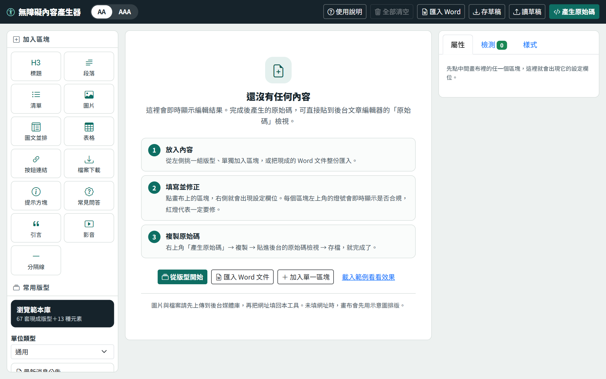
方法一：從範本庫開始（最快）
- 按左側「瀏覽範本庫」。
- 用上方的「單位類型」與「內容主題」篩選，例如「學校」加「招生報名」。
- 看卡片上的縮圖與說明，找到合適的範本。
- 按「加到版面」：範本會接在畫布現有內容的後面；按「取代全部」：畫布原有內容會被清掉，換成這套範本。
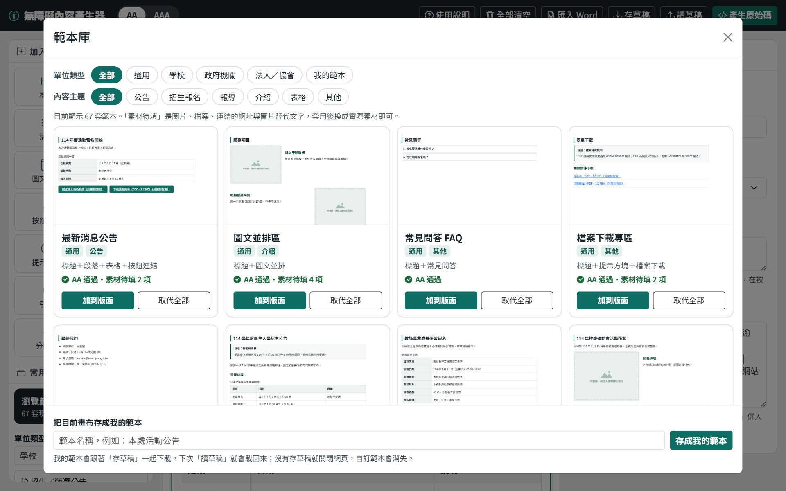
每張卡片下方會顯示檢測結果：
- 「AA 通過・素材待填 2 項」：範本本身沒問題，套用後還要填入圖片、檔案或連結的網址，以及圖片的替代文字。
- 「尚有 1 項須修正」：通常是切換到 AAA 等級後，主題色的按鈕對比不夠，到右側「樣式」分頁把主題色調深即可。
畫布已經有內容時按「取代全部」，卡片上會先跳出確認，可以選「確定取代」「先存草稿再取代」或「取消」。
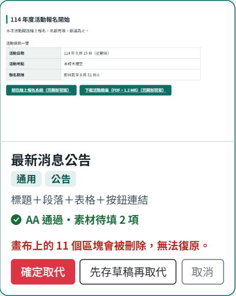
方法二：常用版型或單一區塊
- 常用版型：在左側「單位類型」下拉選單選擇單位，點下方的版型名稱，整套版型就會加到畫布最後面。
- 加入區塊：左側上方有 13 種區塊（標題、段落、表格等），點一下就會加到畫布最後面。
方法三：匯入 Word 文件
- 按上方工具列「匯入 Word」。
- 選一種方式放入內容：
- 「貼上內容」分頁：在 Word 按 Ctrl＋A 全選、Ctrl＋C 複製，點進框框按 Ctrl＋V 貼上（Mac 請把 Ctrl 換成 ⌘）。
- 「上傳檔案」分頁：選擇 .docx 檔案。舊版 .doc 請先在 Word 另存為 .docx。
- 在「匯入方式」選「加在現有內容後面」或「取代全部內容」。
- 按「開始匯入」。
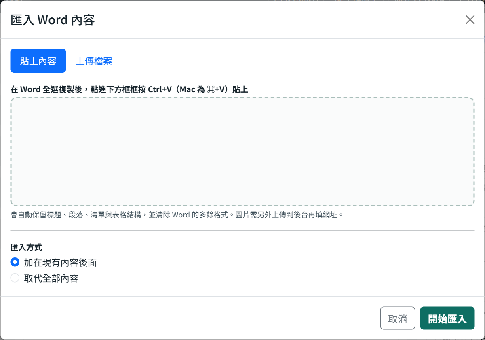
注意：匯入後請檢查以下幾點
- 圖片不會一起匯入，請上傳到後台媒體庫後，到圖片區塊填入網址。
- 表格的「表格標題 caption」會是空的，一定要補上。
- Word 裡粗體的短句可能會被當成標題，請確認標題層級是否正確。
- 合併儲存格會自動轉換，請核對表格欄位有沒有對齊。
編輯區塊
選取、排列與刪除
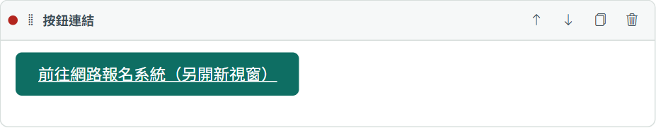
- 修改內容：點區塊的內容，右側「屬性」分頁會出現這個區塊的設定欄位，修改後畫布會即時更新。
- 調整順序：按區塊右上角的 上移、 下移；也可以按住左上角的區塊名稱拖曳。
- 複製：按 複製，會在下方多出一個一模一樣的區塊。
- 刪除：按 刪除。刪除後無法復原。
- 燈號：區塊左上角的圓點，綠色代表通過、黃色代表有建議、紅色代表一定要修正。
各種區塊怎麼填
| 區塊 | 用途 | 填寫重點 |
|---|---|---|
| 標題 | 段落的大標、中標、小標 | 依內容階層選「段落大標／中標／小標」，不可以從大標直接跳到小標。 |
| 段落 | 一般內文 | 可設定粗體、斜體、插入連結。不要用換行或空白鍵排版；條列內容請改用「清單」。 |
| 清單 | 條列項目 | 一行一個項目；有先後順序時，勾選「改為有順序的清單」。 |
| 圖片 | 單張圖片 | 填圖片網址與替代文字；純裝飾的圖片勾選「這是純裝飾用圖片」。 |
| 圖文並排 | 圖片搭配小標與說明 | 可選圖片位置、圖文比例，也可以加一顆按鈕。 |
| 表格 | 時程、費用、名單等資料 | 一定要填「表格標題 caption」，詳見表格怎麼填。 |
| 按鈕連結 | 前往報名、前往系統 | 按鈕文字要寫出目的地，例如「前往線上報名系統」，不要只寫「點這裡」。 |
| 檔案下載 | 簡章、表單下載 | 填檔案名稱、網址、格式（例如 PDF、ODT）與大小。 |
| 提示方塊 | 注意事項、截止提醒 | 選擇類型「提醒／注意／完成」，文字開頭會自動加上類型字樣。 |
| 常見問答 | FAQ | 一題填一組問題與答案；如果後台不支援可展開的樣式，改選「標題＋段落」。 |
| 引言 | 引用某人說的話 | 填引言內容與資料來源。 |
| 影音 | YouTube、Vimeo 影片 | 貼上影片網址並填影片標題；AAA 等級一定要附文字稿。 |
| 分隔線 | 視覺上的分隔 | 只是裝飾，內容分段仍要用標題。 |
表格怎麼填
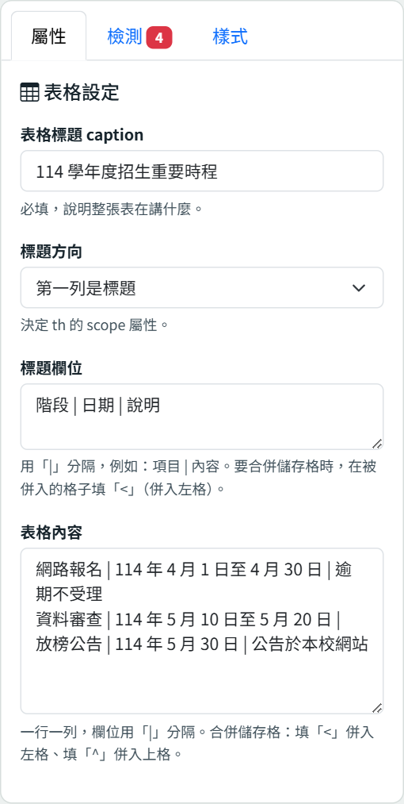
- 表格標題 caption：用一句話說明這張表在講什麼，例如「115 學年度招生重要時程」。這一欄必填。
- 標題方向：最上面一列是欄位名稱，選「第一列是標題」；像「項目｜內容」這種最左邊一欄是名稱的表格，選「第一欄是標題」；兩種都有就選「兩者皆是」。
- 標題欄位：欄位名稱之間用半形直線「|」分隔。
- 表格內容：一行代表一列，欄位一樣用「|」分隔，每一列的欄位數要和標題欄位一樣多。
「標題欄位」填寫範例
階段 | 日期 | 說明「表格內容」填寫範例
網路報名 | 4 月 1 日至 4 月 30 日 | 逾期不受理
資料審查 | 5 月 10 日至 5 月 20 日 |
放榜公告 | 5 月 30 日 | 公告於本校網站合併儲存格
在要被合併掉的格子裡填記號：< 表示和左邊的格子合併，^ 表示和上面的格子合併。
08:30–09:00 | 報到 | <
09:00–09:20 | 開幕致詞 | 校長上面的例子中，「報到」會橫跨兩欄。從 Word 匯入的合併儲存格，也會自動轉成這兩個記號。
圖片、檔案網址與替代文字
工具不能直接上傳圖片或檔案，請依照下列順序處理：
- 到網站後台的媒體庫上傳圖片或檔案。
- 複製檔案網址（通常是 https:// 開頭）。
- 回到工具，貼到區塊的「圖片網址」或「網址」欄位。
還沒填網址時，畫布會先顯示灰色示意圖方便排版，產生的原始碼不會包含示意圖。
替代文字（alt）是念給看不到圖片的人聽的說明，例如使用螢幕報讀軟體的視障者。請描述這張圖片「傳達了什麼」：
| 不好的寫法 | 好的寫法 |
|---|---|
| 圖片 | 校長頒獎給三位得獎學生 |
| IMG_2031.jpg | 運動會大隊接力決賽，六年級選手衝過終點線 |
| 照片：活動照片 | 志工在社區活動中心為長者量血壓 |
如果圖片只是裝飾，旁邊的文字已經說明完整，就勾選「這是純裝飾用圖片」，螢幕報讀軟體會直接略過。
看懂無障礙檢測
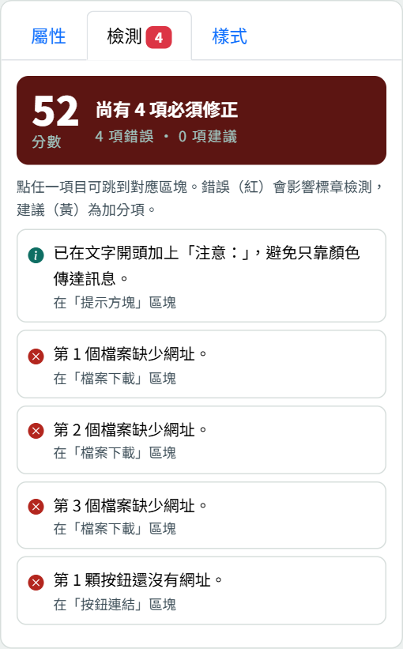
- 分數與結果：最上方顯示分數，以及「符合 WCAG 2.1 AA」或「尚有 N 項必須修正」。
- 錯誤（紅色 圖示）：一定要修正，否則不符合無障礙規範。
- 建議（黃色 圖示）：建議修正，可以讓內容更容易閱讀。
- 說明（綠色 圖示）：告訴你工具自動幫你處理了什麼，不需要修改。
- 跳到問題區塊：點任一個項目，畫布會捲到對應的區塊，右側也會切回「屬性」讓你直接修改。
- 分頁標籤上的數字：代表目前錯誤加建議的總數。
AA 還是 AAA？
上方工具列可以切換檢測等級。一般以 AA 為標準；AAA 的要求更嚴格，例如按鈕對比要達到 7:1、影音一定要附文字稿。沒有特別規定時，選 AA 即可。
常見問題怎麼修
| 檢測訊息 | 怎麼修 |
|---|---|
| 圖片還沒有網址／檔案缺少網址 | 把圖片或檔案上傳到後台媒體庫，複製網址貼回欄位。 |
| 圖片缺少替代文字（alt） | 在「替代文字 alt」描述圖片內容；純裝飾的圖片勾選「這是純裝飾用圖片」。 |
| 表格缺少標題（caption） | 在表格的「表格標題 caption」寫一句說明。 |
| 標題階層從 H3 跳到 H5，中間不可跳階 | 補上中間缺少的標題，或把該標題的層級改成「中標」。 |
| 連結文字「這裡」看不出目的地 | 改成具體的描述，例如「下載 115 年招生簡章」。 |
| 按鈕底色與白字對比只有 X:1 | 到「樣式」分頁把主題色調深，直到對比顯示通過。 |
| 影片缺少標題 | 在影音區塊填寫「影片標題」。 |
提醒：檢測通過不等於寫得好
工具可以檢查替代文字「有沒有填」，但無法判斷內容「寫得對不對」。替代文字、連結文字是否恰當，仍需要人工確認。
樣式設定
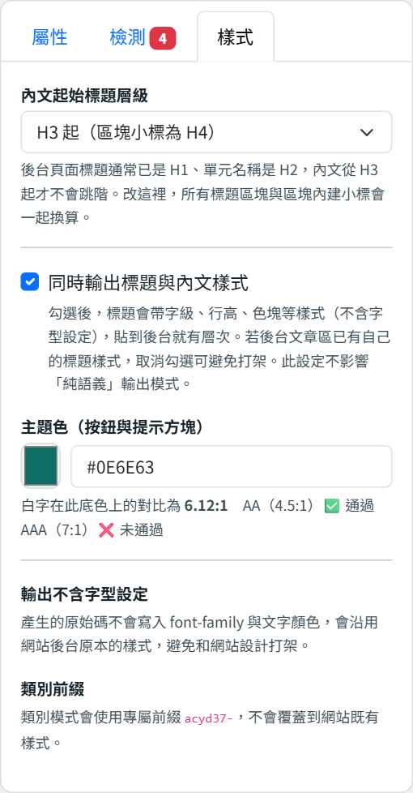
- 內文起始標題層級：後台的頁面標題通常已經是 H1、單元名稱是 H2，所以預設從 H3 開始。不確定時請維持「H3 起」，或詢問網站管理人員。
- 同時輸出標題與內文樣式：勾選後，標題會帶有字級、色塊等樣式。貼到後台後如果和網站原本的樣式衝突，取消勾選即可。
- 主題色：按鈕與提示方塊的顏色。下方會顯示白字對比是否通過 AA／AAA，請選擇有通過的顏色。
產生原始碼並貼到後台
- 按右上角「產生原始碼」。如果視窗上方出現紅色的「還有 N 項必須修正」，建議先回去修正。
- 選擇「輸出方式」，不確定就用預設的「純語義（建議）」。
- 按「複製原始碼」。
- 到網站後台的文章編輯器，點「原始碼」或「Source」按鈕，切換到程式碼檢視。
- 貼上原始碼，切回一般檢視確認畫面，然後儲存。
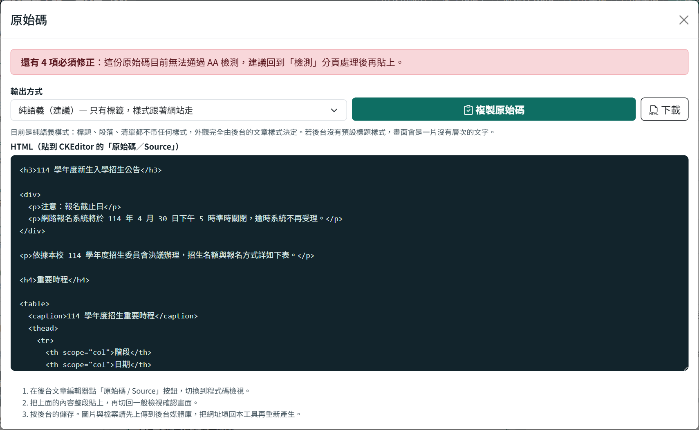
| 輸出方式 | 適合的情況 |
|---|---|
| 純語義（建議） | 大多數情況。只輸出標籤，外觀跟著網站原本的樣式。 |
| 內嵌樣式 | 貼上後畫面沒有層次、按鈕看起來不像按鈕時使用。每個標籤自帶樣式，外觀最穩定。 |
| 類別＋樣式表 | 網站管理人員指定時使用。要把下方的 CSS 區塊一起貼在 HTML 最前面。 |
也可以按「下載」把原始碼存成 .html 檔案，交給網站管理人員。
存草稿與我的範本
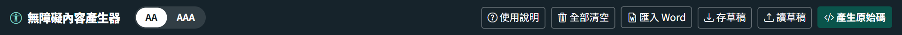
存草稿、讀草稿
- 存草稿：按「存草稿」會下載一個 draft.json 檔案到電腦（通常在「下載」資料夾），建議改成好辨認的檔名，例如「115 招生公告.json」。
- 讀草稿：按「讀草稿」，選擇之前存的 .json 檔案，就能接著編輯。讀草稿會取代畫布上目前的內容。
- 全部清空：會刪除畫布上所有區塊且無法復原；確認視窗中可以選「先存草稿再清空」。
我的範本
常用的版面可以存成自己的範本，下次直接套用：
- 在畫布上排好版面。
- 按「瀏覽範本庫」，在視窗最下方輸入範本名稱，按「存成我的範本」。
- 之後在範本庫的「單位類型」選「我的範本」，就能找到並套用。
注意：我的範本也要存草稿才會保留
我的範本會和畫布內容一起存進草稿檔。關閉網頁前沒有存草稿，自訂範本就會消失；下次按「讀草稿」載入同一個檔案，我的範本就會回來。
用手機或平板操作
螢幕較窄時，左右兩側的面板會收起來，改用畫面最下方的兩顆按鈕開啟：
- 加入區塊：開啟左側面板，可以加入區塊、瀏覽範本庫或套用常用版型。
- 設定／檢測：開啟右側面板，修改區塊內容與查看檢測結果。
點選畫布上的區塊時，右側面板會自動開啟。內容較長時，建議還是用電腦編輯。
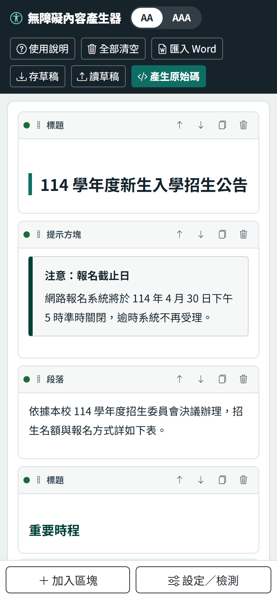
常見問題
不小心關掉網頁，內容還找得回來嗎？
找不回來。工具不會自動儲存，請養成隨時按「存草稿」的習慣。
刪除區塊或按了「取代全部」，可以復原嗎？
不行，工具沒有復原功能。要做大幅修改前，建議先存草稿。
貼到後台後，畫面和工具裡看到的不一樣？
工具畫布一律帶樣式預覽，「純語義」輸出則會跟著網站原本的樣式顯示。需要和工具裡相同的外觀時，產生原始碼時改選「內嵌樣式」。
後台儲存後，常見問答的展開效果不見了？
部分後台會過濾掉可展開的標籤。請到常見問答區塊，把「呈現方式」改成「標題＋段落」，再重新產生原始碼。
表格的「|」要怎麼打？
請切換到英文輸入，按住 Shift 再按 Enter 上方的「\」鍵。全形的「｜」不會被當成欄位分隔符號。
Word 裡的圖片為什麼沒有匯入？
圖片必須放在網站後台才能正常顯示。請把圖片上傳到後台媒體庫，再到工具的圖片區塊填入網址與替代文字。
「素材待填」是什麼意思？
範本裡的圖片、檔案、連結網址與圖片替代文字，要換成你實際的素材才能填寫，所以先標示為待填。套用範本後填好，檢測就會通過。
檢測全部通過，就代表整個網頁都符合無障礙嗎？
不一定。工具只檢查這份內容裡的常見項目，例如替代文字、標題層級、表格標題與連結文字。網站的選單、版型、表單等是否合規，仍需要由網站管理單位另外檢測。